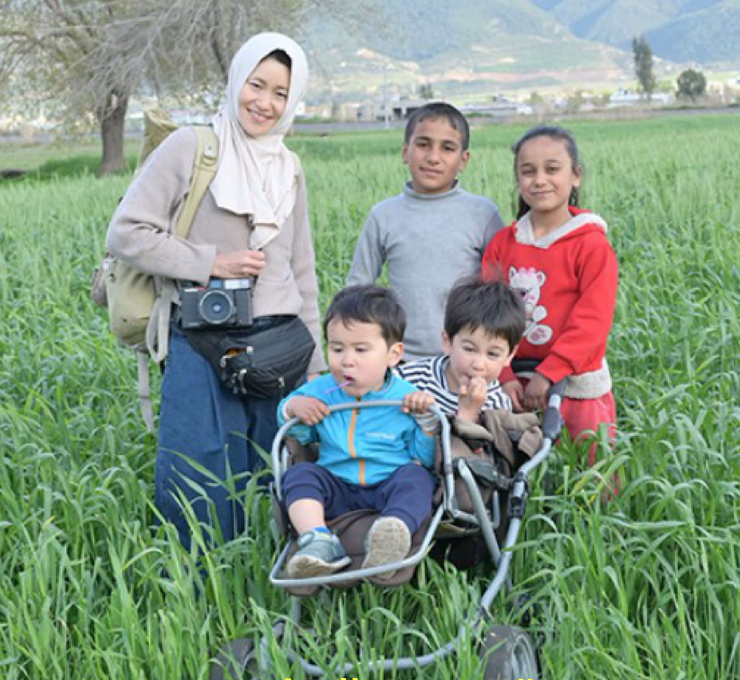

第7回 工学院大学校友会会員交流会「サタデートーク」

「ヒマラヤから砂漠へ、難民の土地へ ~登山家、写真家、母としての挑戦~」
講師：小松由佳さん
日時：令和3年11月20日(土) 13:30~15:00
料金：無料
開催形態：リモートによる講演
講師情報
講師：小松由佳さん
職業：フォトグラファー
1982年 秋田市生まれ
2006年 日本人女性として、初めてヒマラヤK2に登頂
植村直己賞
秋田県民栄誉賞受賞
その後、草原に暮らす人々の暮らしの取材で知り合ったシリア人男性と結婚。八王子市在住
2012年からシリア内戦、難民の暮らしを取材中
申し込み
氏名,大学/高校/専門,卒年,出身学科をEmailでご連絡ください。
お申込み頂いた方には参加案内を返信いたします。
宛名：校友会事務局
Email:jimukyoku@kogakuin.or.jp